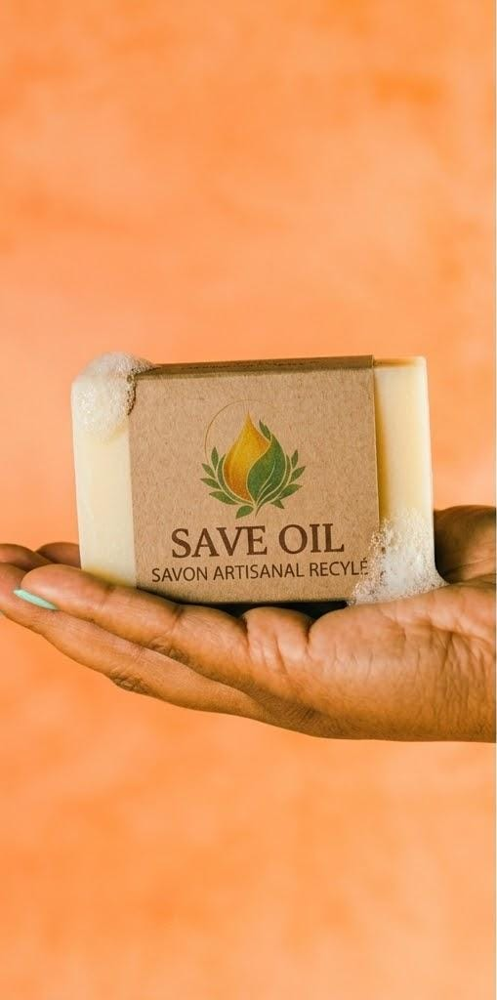
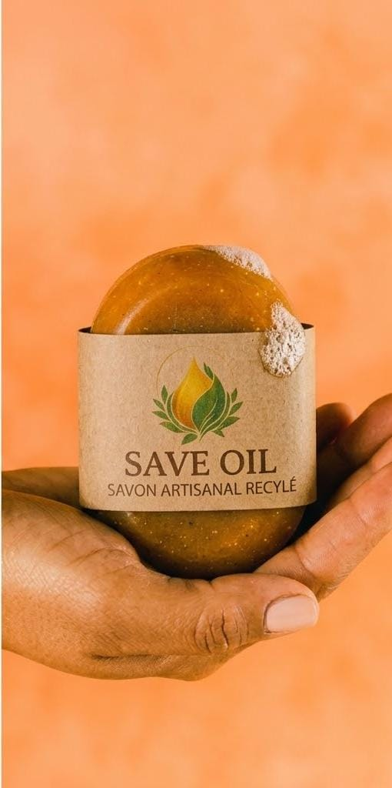
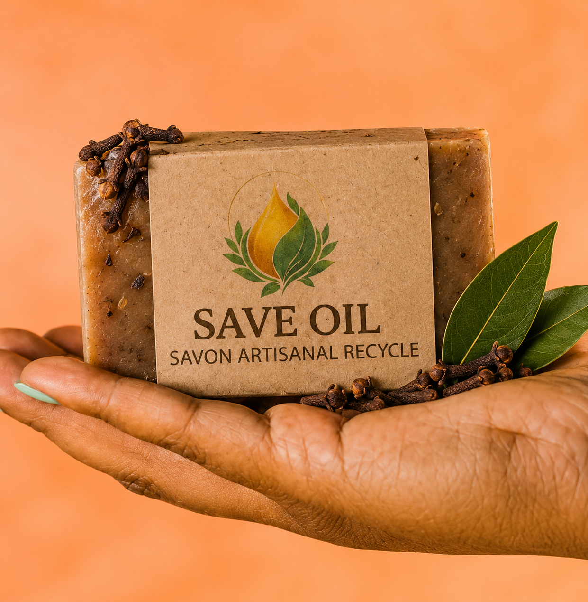
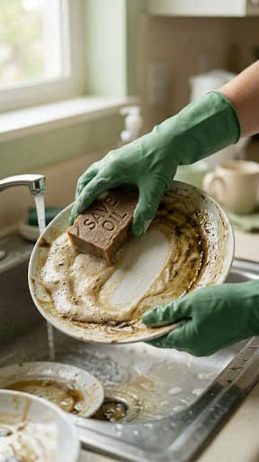
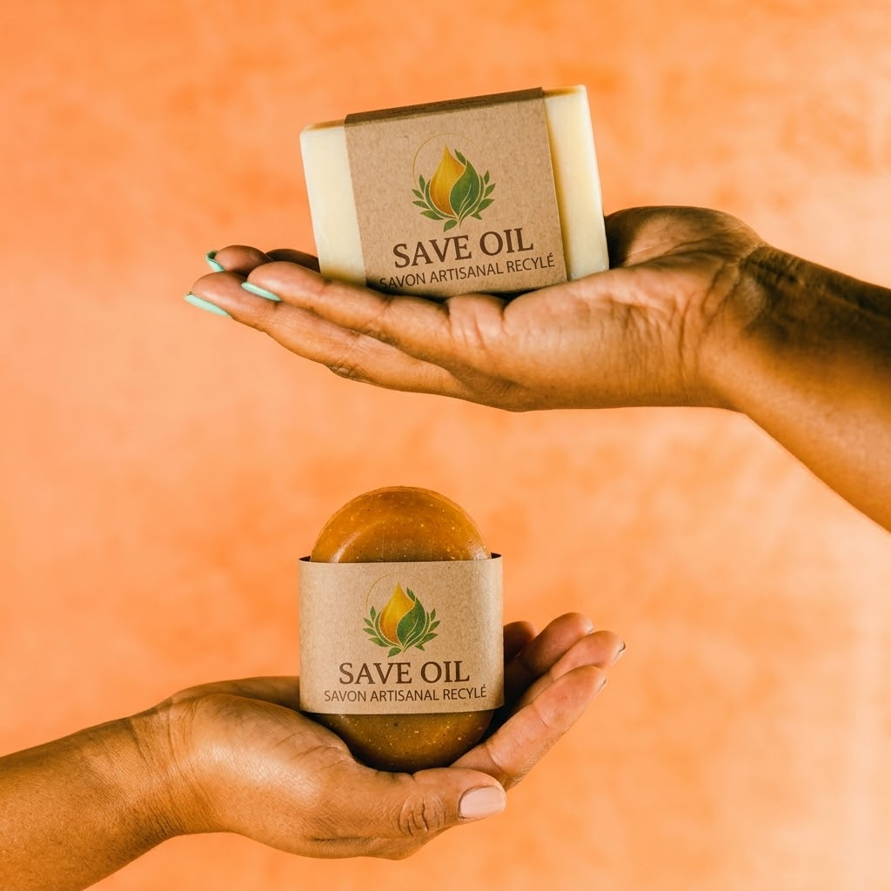
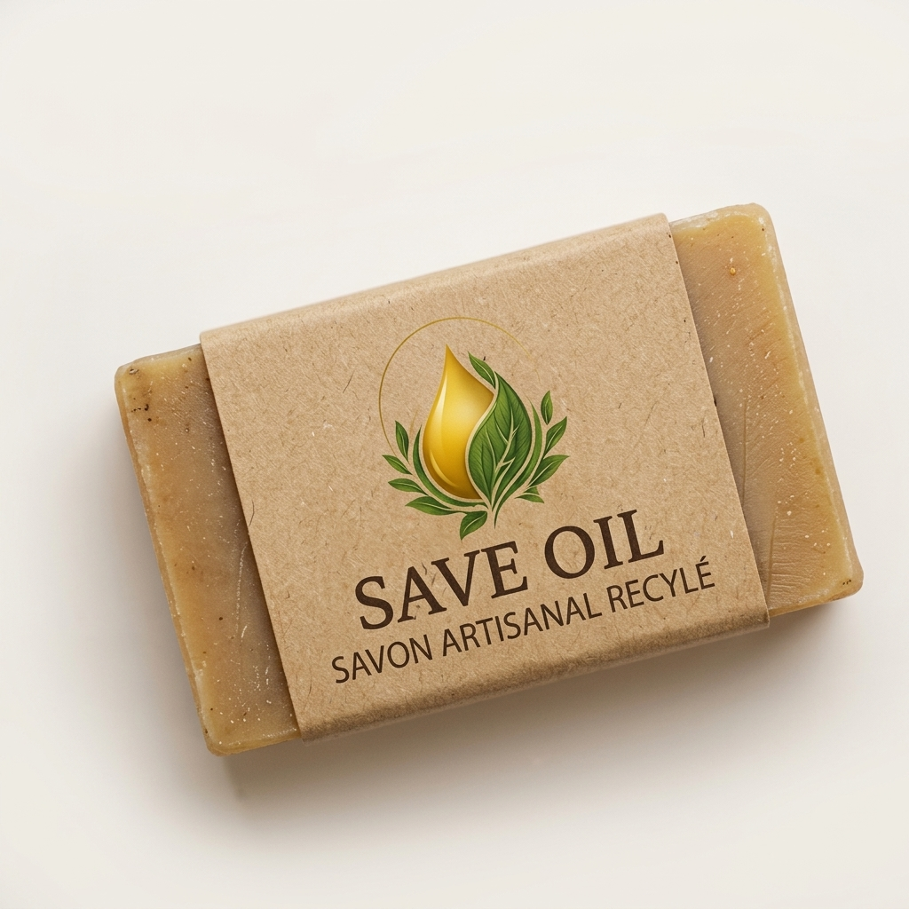
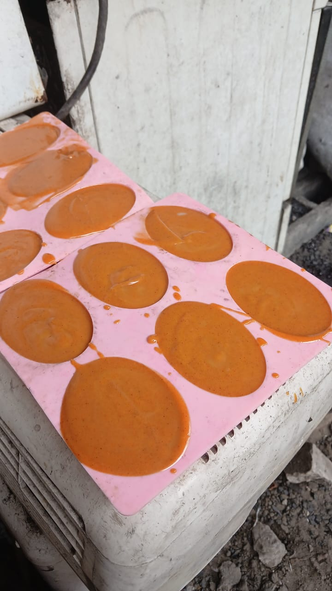
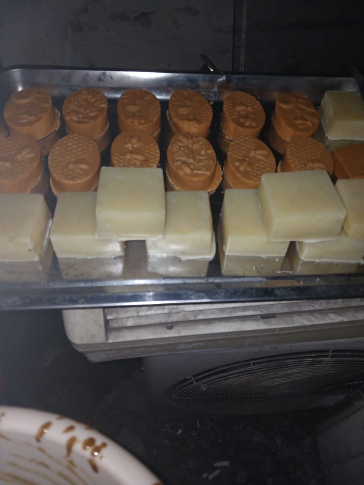

Découvrez le savon qui vous donnera envie de tout laver !
Puissant contre les graisses, doux pour les mains. Formulé à base d’huile, il nettoie efficacement tout en respectant l’environnement.

Savon Naturel (Ménager)

Savon au Curcuma

Girofle & Hauriet
L’allié de votre maison
Que ce soit pour dégraisser puissamment la vaisselle avec notre version Naturelle, pour assainir et purifier vos surfaces grâce au Curcuma, ou encore pour désinfecter et rafraîchir votre intérieur avec la recette Girofle & Hauriet, chaque brique est conçue pour rendre vos tâches ménagères plus simples et plus saines.
- ✔ Ultra-dégraissant et antibactérien
- ✔ Ingrédients 100% naturels (Huile Recyclée, Curcuma, Girofle)
- ✔ Fabriqué artisanalement et localement à Kinshasa
1000 CDF
/ la brique
Mode d'utilisation
Passer au savon solide pour la vaisselle et le ménage est très simple. Suivez ces 3 étapes pour une efficacité redoutable contre la graisse.
Humidifier l'éponge
Mouillez généreusement votre éponge ou votre brosse vaisselle à l'eau chaude (pour une efficacité optimale).
Frotter le savon
Passez l'éponge directement sur la brique de savon pour faire mousser. Une petite quantité suffit pour dégraisser !
Laver et rincer
Nettoyez votre vaisselle ou vos surfaces comme à votre habitude, puis rincez à l'eau claire, laissez poser pour les poêles et marmites ayant des traces de graisses tenaces.

Pourquoi Save Oil ?
Notre mission est de vous proposer des produits sains, efficaces, et respectueux de notre belle planète.

Économie Circulaire
Nous collectons les ressources utilisées (huiles) pour leur offrir une deuxième vie utile et lutter contre le gaspillage.

Ultra-Dégraissant
il dissout les graisses les plus tenaces sur votre vaisselle et nettoie vos surfaces de façon optimale.
Zéro Déchet Plastique
Fini les bidons en plastique ! Nos emballages sont minimalistes et biodégradables pour réduire l'impact environnemental.

Fabrication Artisanale
La recette repose sur trois ingrédients : huile de palmiste, soude caustique et eau. Chaque huile possède un indice de saponification propre. Pour l’huile de palmiste, cet indice est 0,176. 1 L d’huile de palmiste (1000 g) → 176 g de soude 176 g de soude → 528 g d’eau (poids de la soude × 3) Formule universelle : poids de l’eau = poids de la soude × 3.

Ingrédients Naturels
Notre savon ménager est conçu uniquement pour l’entretien domestique et n’est pas destiné à un usage corporel. Les ingrédients utilisés (huile de palmiste, soude caustique et eau) sont sûrs et ne présentent aucun caractère cancérigène. La sécurité repose sur le respect des dosages et l’absence de parfums ou colorants toxiques.